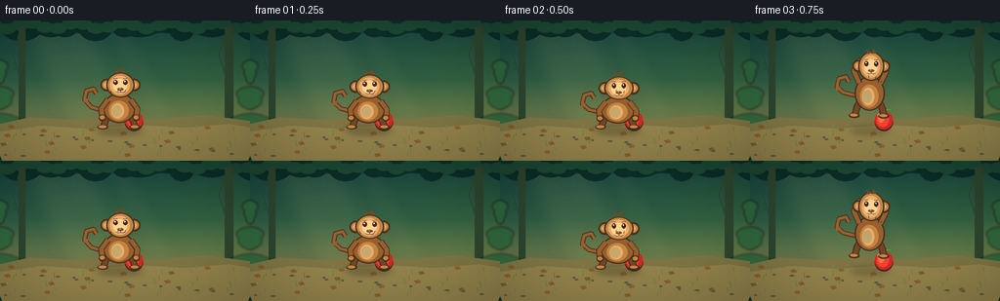
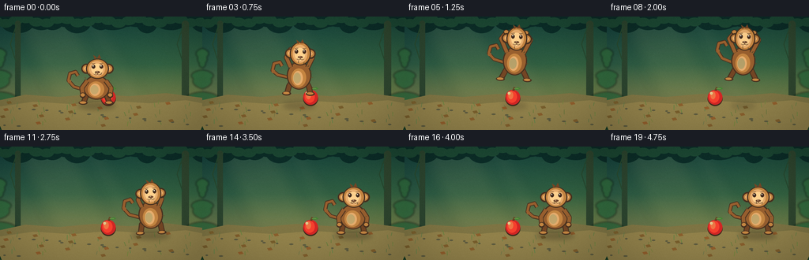

CODING AGENTS AS PIXEL WORLD MODELS
traex/DeepSeek-V4.1-Flash · dynamic_spatial_relationship_0060
点击播放 · 原生 RGB 像素
逐轮保存的候选
回放视频、检查图与代码变化。
每份候选均可单独播放。实际图片检查记录在下方工具轨迹中。
候选 01播放与检查图
点击播放 · 原生 RGB 像素


展开代码变化
--- 上一保存版本
+++ 本次保存版本
@@ -0,0 +1,404 @@
+from __future__ import annotations
+
+import math
+from pathlib import Path
+
+import imageio.v2 as imageio
+import numpy as np
+from PIL import Image, ImageDraw, ImageFilter
+
+import artifact_io
+
+
+CASE_DIR = Path(__file__).resolve().parent
+W, H, N, FPS = 256, 144, 20, 4.0
+SS = 4
+
+
+def smoothstep(t: float) -> float:
+ t = max(0.0, min(1.0, t))
+ return t * t * (3.0 - 2.0 * t)
+
+
+def ease_out(t: float) -> float:
+ t = max(0.0, min(1.0, t))
+ return 1.0 - (1.0 - t) ** 3
+
+
+def rgba(color: tuple[int, int, int], alpha: int = 255) -> tuple[int, int, int, int]:
+ return (*color, alpha)
+
+
+def scaled_xy(x: float, y: float) -> tuple[int, int]:
+ return round(x * SS), round(y * SS)
+
+
+def scaled_box(box: tuple[float, float, float, float]) -> tuple[int, int, int, int]:
+ return tuple(round(v * SS) for v in box)
+
+
+def ellipse(draw: ImageDraw.ImageDraw, box, fill=None, outline=None, width=1):
+ draw.ellipse(scaled_box(box), fill=fill, outline=outline, width=round(width * SS))
+
+
+def rounded_rect(draw: ImageDraw.ImageDraw, box, radius, fill=None, outline=None, width=1):
+ draw.rounded_rectangle(
+ scaled_box(box), radius=round(radius * SS), fill=fill, outline=outline, width=round(width * SS)
+ )
+
+
+def polygon(draw: ImageDraw.ImageDraw, points, fill=None, outline=None):
+ draw.polygon([scaled_xy(x, y) for x, y in points], fill=fill, outline=outline)
+
+
+def line(draw: ImageDraw.ImageDraw, points, fill, width, joint="curve"):
+ draw.line([scaled_xy(x, y) for x, y in points], fill=fill, width=round(width * SS), joint=joint)
+
+
+def make_background() -> Image.Image:
+ width, height = W * SS, H * SS
+ y = np.linspace(0.0, 1.0, height, dtype=np.float32)[:, None, None]
+ top = np.array([20, 63, 58], dtype=np.float32)
+ middle = np.array([59, 103, 66], dtype=np.float32)
+ bottom = np.array([139, 121, 72], dtype=np.float32)
+ first = np.clip(y * 1.55, 0, 1)
+ second = np.clip((y - 0.42) / 0.58, 0, 1)
+ rgb = top * (1 - first) + middle * first
+ rgb = rgb * (1 - second) + bottom * second
+ x = np.linspace(0.0, 1.0, width, dtype=np.float32)[None, :, None]
+ rgb = rgb + (x - 0.45) * np.array([7.0, 8.0, -3.0], dtype=np.float32)
+ canvas = Image.fromarray(np.uint8(np.clip(rgb, 0, 255)), "RGB").convert("RGBA")
+ draw = ImageDraw.Draw(canvas, "RGBA")
+
+ # Warm shafts of late-afternoon light.
+ rays = Image.new("RGBA", canvas.size, (0, 0, 0, 0))
+ rd = ImageDraw.Draw(rays, "RGBA")
+ polygon(rd, [(10, -8), (89, -8), (148, 112), (70, 112)], rgba((255, 220, 137), 17))
+ polygon(rd, [(101, -8), (122, -8), (190, 112), (155, 112)], rgba((255, 233, 174), 12))
+ rays = rays.filter(ImageFilter.GaussianBlur(9 * SS))
+ canvas = Image.alpha_composite(canvas, rays)
+ draw = ImageDraw.Draw(canvas, "RGBA")
+
+ # Deep, layered canopy.
+ for i in range(29):
+ cx = -8 + i * 10 + math.sin(i * 2.1) * 5
+ cy = -3 + (i % 4) * 3
+ rx = 13 + (i * 7) % 12
+ ry = 8 + (i * 5) % 8
+ ellipse(draw, (cx - rx, cy - ry, cx + rx, cy + ry), rgba((11, 43, 38), 235))
+ for i in range(22):
+ cx = -6 + i * 13
+ cy = 4 + math.sin(i * 1.7) * 3
+ ellipse(draw, (cx - 9, cy - 4, cx + 9, cy + 7), rgba((26, 68, 49), 220))
+
+ # Distant trunks and vines give depth without competing with the subjects.
+ for tx, tw, color in [(19, 7, (41, 65, 45)), (230, 9, (44, 66, 44))]:
+ rounded_rect(draw, (tx, 5, tx + tw, 115), tw / 2, rgba(color, 205))
+ line(draw, [(tx + tw * 0.3, 9), (tx - 6, 35), (tx + 1, 57)], rgba((37, 70, 46), 165), 1.2)
+
+ # Midground foliage, softened slightly to sit behind the clearing.
+ mid = Image.new("RGBA", canvas.size, (0, 0, 0, 0))
+ md = ImageDraw.Draw(mid, "RGBA")
+ for side, base_x in [(-1, 0), (1, 256)]:
+ for i in range(12):
+ yy = 47 + i * 7
+ xx = base_x + side * (9 + (i % 4) * 8)
+ rx = 17 + (i % 3) * 6
+ ry = 8 + (i % 2) * 4
+ ellipse(md, (xx - rx, yy - ry, xx + rx, yy + ry), rgba((43, 98, 57), 220))
+ if i % 3 == 0:
+ ellipse(md, (xx - rx * 0.55, yy - ry * 0.45, xx + rx * 0.35, yy + ry * 0.2), rgba((78, 126, 69), 130))
+ mid = mid.filter(ImageFilter.GaussianBlur(1.2 * SS))
+ canvas = Image.alpha_composite(canvas, mid)
+ draw = ImageDraw.Draw(canvas, "RGBA")
+
+ # Clearing floor.
+ polygon(
+ draw,
+ [(0, 106), (32, 99), (75, 102), (119, 98), (163, 101), (210, 97), (256, 103), (256, 144), (0, 144)],
+ rgba((120, 111, 65), 255),
+ )
+ polygon(
+ draw,
+ [(0, 114), (42, 108), (91, 111), (140, 107), (190, 110), (235, 106), (256, 110), (256, 144), (0, 144)],
+ rgba((139, 124, 72), 240),
+ )
+ for i in range(38):
+ gx = (i * 37 + 11) % 257
+ gy = 110 + ((i * 19) % 30)
+ shade = (89 + (i * 13) % 25, 111 + (i * 7) % 20, 55 + (i * 5) % 18)
+ line(draw, [(gx, gy), (gx - 2 + i % 4, gy - 4 - i % 3)], rgba(shade, 145), 0.75)
+
+ # Small stones and dappled leaf litter.
+ for i in range(18):
+ gx = (i * 53 + 23) % 248
+ gy = 116 + (i * 29) % 24
+ ellipse(draw, (gx, gy, gx + 3.2 + i % 3, gy + 1.8), rgba((87, 86, 61), 115))
+ for i in range(16):
+ lx = (i * 41 + 8) % 250
+ ly = 108 + (i * 17) % 31
+ polygon(
+ draw,
+ [(lx, ly), (lx + 5, ly - 1), (lx + 7, ly + 2), (lx + 2, ly + 3)],
+ rgba((115 + i % 4 * 8, 91, 43), 95),
+ )
+
+ # Fine grain keeps the flat-color shapes from looking sterile.
+ arr = np.asarray(canvas.convert("RGB")).astype(np.int16)
+ rng = np.random.default_rng(23)
+ noise = rng.normal(0, 3.0, (height, width, 1)).round().astype(np.int16)
+ arr = np.clip(arr + noise, 0, 255).astype(np.uint8)
+ return Image.fromarray(arr, "RGB").convert("RGBA")
+
+
+def draw_apple(base: Image.Image, cx: float, cy: float) -> None:
+ layer = Image.new("RGBA", base.size, (0, 0, 0, 0))
+ draw = ImageDraw.Draw(layer, "RGBA")
+ ellipse(draw, (cx - 9.5, cy - 9.0, cx + 9.5, cy + 10.0), rgba((61, 41, 28), 255))
+ ellipse(draw, (cx - 9.2, cy - 10.5, cx + 9.2, cy + 8.3), rgba((200, 37, 35), 255))
+ ellipse(draw, (cx - 7.4, cy - 9.3, cx + 5.3, cy + 5.7), rgba((235, 61, 44), 255))
+ ellipse(draw, (cx - 5.8, cy - 8.5, cx + 0.5, cy + 1.2), rgba((255, 111, 65), 205))
+ ellipse(draw, (cx - 6.5, cy - 8.0, cx - 3.0, cy - 4.5), rgba((255, 218, 156), 190))
+ polygon(draw, [(cx - 0.7, cy - 9.8), (cx + 1.2, cy - 14.3), (cx + 3.2, cy - 13.5), (cx + 1.8, cy - 9.1)], rgba((99, 60, 33), 255))
+ polygon(draw, [(cx + 1.1, cy - 12.2), (cx + 7.2, cy - 14.3), (cx + 10.2, cy - 11.8), (cx + 4.2, cy - 10.2)], rgba((68, 124, 52), 255))
+ line(draw, [(cx + 2.0, cy - 12.4), (cx + 7.0, cy - 12.1)], rgba((133, 172, 83), 190), 0.65)
+ base.alpha_composite(layer)
+
+
+def draw_shadow(base: Image.Image, cx: float, baseline: float, scale: float, opacity: int) -> None:
+ shadow = Image.new("RGBA", base.size, (0, 0, 0, 0))
+ draw = ImageDraw.Draw(shadow, "RGBA")
+ ellipse(draw, (cx - 24 * scale, baseline - 4.2, cx + 24 * scale, baseline + 4.5), rgba((36, 33, 23), opacity))
+ shadow = shadow.filter(ImageFilter.GaussianBlur(3.0 * SS))
+ base.alpha_composite(shadow)
+
+
+def draw_monkey(base: Image.Image, cx: float, baseline: float, pose: dict) -> None:
+ sx = pose.get("sx", 1.0)
+ sy = pose.get("sy", 1.0)
+ tilt = pose.get("tilt", 0.0)
+ airborne = pose.get("airborne", 0.0)
+ arm = pose.get("arm", 0.0)
+ leg = pose.get("leg", 0.0)
+ tail_phase = pose.get("tail_phase", 0.0)
+
+ layer = Image.new("RGBA", base.size, (0, 0, 0, 0))
+ draw = ImageDraw.Draw(layer, "RGBA")
+
+ dark = (69, 47, 30, 255)
+ fur = (145, 91, 45, 255)
+ fur_light = (188, 128, 63, 255)
+ fur_shadow = (111, 67, 35, 255)
+ face = (221, 166, 105, 255)
+ face_light = (245, 201, 137, 255)
+
+ # Tail, drawn behind the body.
+ tx = cx - 18 * sx
+ ty = baseline - 25 * sy
+ sway = math.sin(tail_phase) * 3.5
+ tail_points = [
+ (tx + 4, ty + 5),
+ (tx - 10, ty + 1 + sway * 0.3),
+ (tx - 17, ty - 7 + sway),
+ (tx - 15, ty - 16 + sway),
+ (tx - 8, ty - 18 + sway),
+ (tx - 5, ty - 13 + sway),
+ ]
+ line(draw, tail_points, dark, 4.7)
+ line(draw, tail_points, fur, 3.0)
+ ellipse(draw, (tx - 18.1, ty - 8.1 + sway, tx - 13.7, ty - 3.7 + sway), fur)
+
+ # Back legs and feet.
+ for side in (-1, 1):
+ hip_x = cx + side * 9.5 * sx
+ knee_x = cx + side * (12.5 + leg * 2.0) * sx
+ knee_y = baseline - (12.5 - leg * 4.0) * sy
+ foot_x = cx + side * (14.5 + leg * 4.0) * sx
+ foot_y = baseline - 2.2
+ line(draw, [(hip_x, baseline - 16 * sy), (knee_x, knee_y), (foot_x, foot_y)], dark, 7.2)
+ line(draw, [(hip_x, baseline - 16 * sy), (knee_x, knee_y), (foot_x, foot_y)], fur_shadow, 5.0)
+ ellipse(draw, (foot_x - 6.0, foot_y - 2.8, foot_x + 5.2, foot_y + 2.0), dark)
+ ellipse(draw, (foot_x - 4.8, foot_y - 2.4, foot_x + 3.4, foot_y + 0.6), fur_light)
+
+ # Torso with a warm belly patch.
+ body_box = (cx - 16.5 * sx, baseline - 39 * sy, cx + 16.5 * sx, baseline - 7 * sy)
+ ellipse(draw, body_box, dark)
+ ellipse(draw, (body_box[0] + 1.5, body_box[1] + 1.4, body_box[2] - 1.5, body_box[3] - 1.2), fur)
+ ellipse(draw, (cx - 10.5 * sx, baseline - 31 * sy, cx + 9.5 * sx, baseline - 10 * sy), fur_light)
+ ellipse(draw, (cx - 8.0 * sx, baseline - 28 * sy, cx + 5.0 * sx, baseline - 12 * sy), face)
+ ellipse(draw, (cx - 7.5 * sx, baseline - 26 * sy, cx + 2.5 * sx, baseline - 14 * sy), rgba((235, 184, 120), 170))
+
+ # Arms respond to the jump pose.
+ for side in (-1, 1):
+ shoulder = (cx + side * 11.5 * sx, baseline - 32 * sy)
+ if airborne > 0.25:
+ elbow = (cx + side * (16 + arm * 5) * sx, baseline - (41 + arm * 7) * sy)
+ hand = (cx + side * (11 + arm * 3) * sx, baseline - (50 + arm * 5) * sy)
+ else:
+ elbow = (cx + side * 18 * sx, baseline - (22 + arm * 2) * sy)
+ hand = (cx + side * 17 * sx, baseline - (13 - arm * 3) * sy)
+ line(draw, [shoulder, elbow, hand], dark, 6.3)
+ line(draw, [shoulder, elbow, hand], fur, 4.5)
+ ellipse(draw, (hand[0] - 3.7, hand[1] - 3.5, hand[0] + 3.7, hand[1] + 3.2), dark)
+ ellipse(draw, (hand[0] - 2.7, hand[1] - 2.6, hand[0] + 2.5, hand[1] + 1.5), fur_light)
+
+ # Head and ears.
+ head_cx = cx + 1.2 * sx
+ head_cy = baseline - (48.0 * sy)
+ for side in (-1, 1):
+ ex = head_cx + side * 13.8 * sx
+ ellipse(draw, (ex - 6.4, head_cy - 6.2, ex + 6.4, head_cy + 6.6), dark)
+ ellipse(draw, (ex - 4.6, head_cy - 4.4, ex + 4.6, head_cy + 4.5), fur_light)
+ ellipse(draw, (ex - 2.8, head_cy - 2.4, ex + 2.4, head_cy + 2.5), face)
+ ellipse(draw, (head_cx - 14.2 * sx, head_cy - 13.0 * sy, head_cx + 14.2 * sx, head_cy + 13.5 * sy), dark)
+ ellipse(draw, (head_cx - 12.7 * sx, head_cy - 12.0 * sy, head_cx + 12.7 * sx, head_cy + 12.3 * sy), fur_light)
+ ellipse(draw, (head_cx - 10.4 * sx, head_cy - 9.8 * sy, head_cx + 9.4 * sx, head_cy + 10.5 * sy), face)
+ ellipse(draw, (head_cx - 7.5 * sx, head_cy - 6.5 * sy, head_cx + 6.6 * sx, head_cy + 8.0 * sy), face_light)
+
+ # Hair tuft.
+ polygon(draw, [(head_cx - 3.5, head_cy - 12), (head_cx - 5.3, head_cy - 17.2), (head_cx - 0.7, head_cy - 14.0)], fur_shadow)
+ polygon(draw, [(head_cx - 0.5, head_cy - 13), (head_cx + 2.3, head_cy - 18.0), (head_cx + 4.5, head_cy - 12.8)], fur_shadow)
+
+ # Face: big eyes, small nose, quiet smile.
+ for side in (-1, 1):
+ eye_x = head_cx + side * 5.0
+ eye_y = head_cy - 2.2
+ ellipse(draw, (eye_x - 2.2, eye_y - 2.8, eye_x + 2.2, eye_y + 2.4), rgba((62, 40, 28), 255))
+ ellipse(draw, (eye_x - 1.2, eye_y - 1.9, eye_x + 0.3, eye_y - 0.5), rgba((255, 247, 218), 245))
+ line(draw, [(eye_x - 2.2, eye_y - 4.0), (eye_x + 1.9, eye_y - 4.5)], rgba((108, 66, 37), 190), 0.75)
+ ellipse(draw, (head_cx - 3.2, head_cy + 3.2, head_cx + 3.2, head_cy + 6.0), rgba((111, 70, 46), 255))
+ ellipse(draw, (head_cx - 1.5, head_cy + 3.6, head_cx + 0.4, head_cy + 4.5), rgba((231, 185, 134), 180))
+ line(draw, [(head_cx, head_cy + 5.8), (head_cx, head_cy + 7.2)], rgba((112, 67, 42), 220), 0.7)
+ line(draw, [(head_cx - 4.4, head_cy + 7.0), (head_cx - 2.0, head_cy + 8.2), (head_cx, head_cy + 7.3)], rgba((111, 63, 40), 225), 0.8)
+ line(draw, [(head_cx, head_cy + 7.3), (head_cx + 2.2, head_cy + 8.1), (head_cx + 4.4, head_cy + 6.9)], rgba((111, 63, 40), 225), 0.8)
+
+ # Sparse fur texture along the silhouette.
+ for i in range(7):
+ angle = -2.5 + i * 0.43
+ fx = cx + math.cos(angle) * 16.0 * sx
+ fy = baseline - 25 + math.sin(angle) * 15.0 * sy
+ line(draw, [(fx, fy), (fx + math.cos(angle) * 2.4, fy + math.sin(angle) * 2.4)], rgba((104, 63, 34), 175), 0.65)
+
+ if abs(tilt) > 0.01:
+ layer = layer.rotate(
+ tilt,
+ resample=Image.Resampling.BICUBIC,
+ center=scaled_xy(cx, baseline - 28),
+ )
+ base.alpha_composite(layer)
+
+
+def draw_foreground(base: Image.Image) -> None:
+ draw = ImageDraw.Draw(base, "RGBA")
+ # A few crisp foreground leaves frame the clearing.
+ for side, x0 in [(-1, 2), (1, 254)]:
+ for i in range(6):
+ x = x0 + side * (i * 3.2)
+ y = 139 - i * 4.1
+ polygon(
+ draw,
+ [(x, 144), (x + side * 2, y), (x + side * 13, y - 5), (x + side * 9, y + 3)],
+ rgba((20 + i * 2, 55 + i * 2, 34), 225),
+ )
+ line(draw, [(x + side * 3, 142), (x + side * 11, y - 2)], rgba((69, 103, 52), 150), 0.55)
+
+
+def pose_for_frame(index: int) -> tuple[float, float, dict]:
+ ground = 112.0
+ start_x = 122.0
+ end_x = 190.5
+
+ if index <= 2:
+ x = start_x - index * 0.8
+ y = ground
+ crouch = 0.04 + index * 0.035
+ pose = {
+ "sx": 1.0 + crouch * 0.55,
+ "sy": 1.0 - crouch,
+ "arm": 0.15,
+ "leg": 0.4,
+ "tail_phase": index * 0.45,
+ }
+ elif index <= 11:
+ u = (index - 2) / 9.0
+ travel = smoothstep(u)
+ x = start_x + (end_x - start_x) * travel
+ y = ground - 34.0 * math.sin(math.pi * u)
+ if u < 0.30:
+ x -= 2.0 * math.sin((u / 0.30) * math.pi)
+ stretch = 0.10 + 0.05 * math.sin(math.pi * u)
+ pose = {
+ "sx": 1.0 - stretch * 0.55,
+ "sy": 1.0 + stretch,
+ "tilt": -3.0 * math.sin(math.pi * u) + 2.5 * smoothstep(max(0, u - 0.5) * 2),
+ "airborne": 1.0,
+ "arm": math.sin(math.pi * u),
+ "leg": math.sin(math.pi * u) * 1.15,
+ "tail_phase": index * 0.55,
+ }
+ else:
+ settle = min(1.0, (index - 11) / 3.0)
+ bounce = max(0.0, math.sin((index - 11) * math.pi / 2.2)) * (1.0 - settle)
+ x = end_x
+ y = ground - 2.4 * bounce
+ squash = (1.0 - settle) * 0.09
+ pose = {
+ "sx": 1.0 + squash,
+ "sy": 1.0 - squash,
+ "arm": 0.15 + 0.2 * (1.0 - settle),
+ "leg": 0.35 * (1.0 - settle),
+ "tail_phase": index * 0.45,
+ }
+ return x, y, pose
+
+
+def render() -> np.ndarray:
+ background = make_background()
+ frames = []
+ apple_x, apple_y = 137.0, 103.5
+
+ for index in range(N):
+ frame = background.copy()
+ monkey_x, monkey_y, pose = pose_for_frame(index)
+ height = max(0.0, 112.0 - monkey_y)
+
+ # Shadow stays on the ground and shrinks as the monkey rises.
+ draw_shadow(frame, monkey_x, 113.0, 1.0 - min(0.38, height / 85.0), int(78 - min(42, height * 1.1)))
+ draw_apple(frame, apple_x, apple_y)
+ draw_monkey(frame, monkey_x, monkey_y, pose)
+ draw_foreground(frame)
+
+ # Gentle vignette and a warm sun kiss from the upper left.
+ rgb = np.asarray(frame.convert("RGB")).astype(np.float32)
+ yy, xx = np.mgrid[0 : H * SS, 0 : W * SS].astype(np.float32)
+ nx = (xx / (W * SS) - 0.5) * 2
+ ny = (yy / (H * SS) - 0.5) * 2
+ vignette = np.clip(1.08 - 0.12 * (nx * nx + ny * ny), 0.87, 1.04)
+ glow = np.clip(1.0 - np.sqrt((xx - 35 * SS) ** 2 + (yy - 5 * SS) ** 2) / (170 * SS), 0.0, 1.0)
+ rgb[..., 0] *= vignette + glow * 0.035
+ rgb[..., 1] *= vignette + glow * 0.020
+ rgb[..., 2] *= vignette
+ frame = Image.fromarray(np.uint8(np.clip(rgb, 0, 255)), "RGB")
+ frame = frame.resize((W, H), Image.Resampling.LANCZOS)
+ frames.append(np.asarray(frame, dtype=np.uint8))
+
+ return np.stack(frames)
+
+
+def main() -> None:
+ frames = render()
+ artifact_io.save(frames, CASE_DIR)
+ imageio.mimsave(
+ CASE_DIR / "video.mp4",
+ frames,
+ fps=FPS,
+ codec="libx264",
+ quality=8,
+ pixelformat="yuv420p",
+ macro_block_size=1,
+ )
+ print(f"wrote {len(frames)} frames to {CASE_DIR}")
+
+
+if __name__ == "__main__":
+ main()
候选 02播放与检查图
点击播放 · 原生 RGB 像素

展开代码变化
--- 上一保存版本
+++ 本次保存版本
@@ -67,7 +67,7 @@
rgb = rgb * (1 - second) + bottom * second
x = np.linspace(0.0, 1.0, width, dtype=np.float32)[None, :, None]
rgb = rgb + (x - 0.45) * np.array([7.0, 8.0, -3.0], dtype=np.float32)
- canvas = Image.fromarray(np.uint8(np.clip(rgb, 0, 255)), "RGB").convert("RGBA")
+ canvas = Image.fromarray(np.uint8(np.clip(rgb, 0, 255))).convert("RGBA")
draw = ImageDraw.Draw(canvas, "RGBA")
# Warm shafts of late-afternoon light.
@@ -148,7 +148,7 @@
rng = np.random.default_rng(23)
noise = rng.normal(0, 3.0, (height, width, 1)).round().astype(np.int16)
arr = np.clip(arr + noise, 0, 255).astype(np.uint8)
- return Image.fromarray(arr, "RGB").convert("RGBA")
+ return Image.fromarray(arr).convert("RGBA")
def draw_apple(base: Image.Image, cx: float, cy: float) -> None:
@@ -378,7 +378,7 @@
rgb[..., 0] *= vignette + glow * 0.035
rgb[..., 1] *= vignette + glow * 0.020
rgb[..., 2] *= vignette
- frame = Image.fromarray(np.uint8(np.clip(rgb, 0, 255)), "RGB")
+ frame = Image.fromarray(np.uint8(np.clip(rgb, 0, 255)))
frame = frame.resize((W, H), Image.Resampling.LANCZOS)
frames.append(np.asarray(frame, dtype=np.uint8))
可观测工具轨迹
实际执行的命令与返回图片。
命令 1exit 0
/bin/bash -c "pwd && rg --files -g 'prompt.txt' -g 'GENERATION_RULES.md' -g 'task_spec.json' -g '"'!**/.git/**'"'"
命令 2exit 0
/bin/bash -c 'ls -la'
命令 3exit 1
/bin/bash -c 'command -v ffmpeg; command -v blender; command -v python3; command -v node; command -v chromium; command -v google-chrome; command -v convert; command -v magick'
命令 4exit 0
/bin/bash -c 'cat prompt.txt'
命令 5exit 0
/bin/bash -c 'cat GENERATION_RULES.md'
命令 6exit 0
/bin/bash -c 'cat task_spec.json'
命令 7exit 0
/bin/bash -c 'cat artifact_io.py'
命令 8exit 0
/bin/bash -c "find .tmp -maxdepth 2 -type f -printf '%p %s bytes\\n' | head -50"
命令 9exit 0
/bin/bash -c "python3 - <<'PY' import importlib.util for m in ['PIL','numpy','cv2','imageio','imageio_ffmpeg','matplotlib','moviepy']: print(m, bool(importlib.util.find_spec(m))) PY"
命令 10exit 1
/bin/bash -c 'python3 generate.py'
命令 11exit 0
/bin/bash -c 'python3 generate.py'
命令 12exit 1
/bin/bash -c 'command -v chafa; command -v viu; command -v img2txt; command -v timg; command -v ffmpeg; command -v ffprobe'
命令 13exit 0
/bin/bash -c "python3 - <<'PY'
from PIL import Image
for p in ['inspection.png','transition_check.png','frames/00.png','frames/05.png','frames/10.png','frames/19.png','video.mp4']:
try:
if p.endswith('.mp4'):
print(p, 'exists')
else:
im=Image.open(p); print(p, im.size, im.mode)
except Exception as e: print(p,e)
PY"命令 14exit 0
/bin/bash -c "python3 - <<'PY'
from PIL import Image, ImageOps
chars='@%#*+=-:. '
for fn in ['frames/00.png','frames/05.png','frames/10.png','frames/19.png']:
im=Image.open(fn).convert('L').resize((64,36))
print('\\n',fn)
px=list(im.getdata())
for y in range(36):
print(''.join(chars[min(9,v*10//256)] for v in px[y*64:(y+1)*64]))
PY"命令 15exit 0
/bin/bash -c "python3 - <<'PY'
from PIL import Image
for i in range(20):
im=Image.open(f'frames/{i:02d}.png')
# saturated red pixels in playable region, excluding leaves
import numpy as np
a=np.asarray(im)
mask=(a[:,:,0]>120)&(a[:,:,0]>a[:,:,1]*1.35)&(a[:,:,0]>a[:,:,2]*1.35)
ys,xs=np.where(mask)
print(i, (xs.min(),xs.max(),ys.min(),ys.max()) if len(xs) else None, len(xs))
PY"命令 16exit 0
/bin/bash -c "python3 - <<'PY'
from PIL import Image
import numpy as np
for i in [0,1,2,3,5,8,11,12,19]:
a=np.asarray(Image.open(f'frames/{i:02d}.png'))
# red blob near expected apple location
mask=(a[:,:,0]>130)&(a[:,:,0]>a[:,:,1]*1.45)&(a[:,:,0]>a[:,:,2]*1.4)
ys,xs=np.where(mask & (np.indices(mask.shape)[0]>70))
print(i, (xs.min(),xs.max(),ys.min(),ys.max()) if len(xs) else None, len(xs))
PY"命令 17exit 0
/bin/bash -c "python3 - <<'PY'
from PIL import Image
import numpy as np
for i in [0,1,2,3,5,8,11,12,19]:
a=np.asarray(Image.open(f'frames/{i:02d}.png'))
yy,xx=np.indices(a.shape[:2])
mask=(a[:,:,0]>140)&(a[:,:,0]>a[:,:,1]*1.5)&(a[:,:,0]>a[:,:,2]*1.5)&(xx>100)&(xx<170)&(yy>75)&(yy<120)
ys,xs=np.where(mask)
print(i, (xs.min(),xs.max(),ys.min(),ys.max()) if len(xs) else None, len(xs))
PY"命令 18exit 0
/bin/bash -c "python3 - <<'PY'
from PIL import Image
import numpy as np
for i in [0,5,10,19]:
a=np.asarray(Image.open(f'frames/{i:02d}.png'))
# avg each 8x8 block, list bright/dark patch perhaps output sixel unavailable
print(i, 'mean', a.mean(axis=(0,1)).round(1), 'std', a.std(axis=(0,1)).round(1))
PY
ffprobe -v error -select_streams v:0 -show_entries stream=codec_name,width,height,nb_frames,r_frame_rate,pix_fmt -of default=noprint_wrappers=1 video.mp4
ls -lh video.mp4 pixels.npz index.html inspection.png"命令 19exit 1
/bin/bash -c "python3 - <<'PY'
import imageio.v2 as iio
r=iio.get_reader('video.mp4')
print('meta',r.get_meta_data())
frames=list(r)
print('decoded frames',len(frames),'shape',frames[0].shape)
PY"命令 20exit 0
/bin/bash -c "python3 - <<'PY'
import imageio.v2 as iio
r=iio.get_reader('video.mp4')
n=0
for _ in r:
n+=1
print('decoded frames',n)
PY"命令 21exit 0
/bin/bash -c "python3 - <<'PY'
from PIL import Image
import numpy as np
bg=np.asarray(Image.open('frames/19.png')).astype(int)
# Count changed pixels in subject region only, and bounding box of meaningful change per frame.
for i in range(20):
a=np.asarray(Image.open(f'frames/{i:02d}.png')).astype(int)
d=np.max(np.abs(a-bg),axis=2)
yy,xx=np.where((d>20)&(np.indices(d.shape)[0]>55))
if len(xx): print(f'{i:02d}', f'x={xx.min()}..{xx.max()}', f'y={yy.min()}..{yy.max()}', 'pixels',len(xx))
PY"命令 22exit 0
/bin/bash -c "python3 - <<'PY'
from PIL import Image, ImageDraw
import numpy as np
# Build a 20-frame enlarged sequence for visual inspection through available file artifact.
ims=[]
for i in range(20):
im=Image.open(f'frames/{i:02d}.png')
ims.append(im.resize((512,288),Image.Resampling.NEAREST))
sheet=Image.new('RGB',(512*4,288*5),(20,20,20))
d=ImageDraw.Draw(sheet)
for i,im in enumerate(ims):
x=(i%4)*512;y=(i//4)*288
sheet.paste(im,(x,y));d.rectangle((x,y,x+50,y+22),fill=(0,0,0));d.text((x+5,y+5),f'{i:02d}',fill='white')
sheet.save('.tmp/all_frames.png')
print('.tmp/all_frames.png',sheet.size)
PY"命令 23exit 0
/bin/bash -c "python3 - <<'PY'
from PIL import Image
im=Image.open('inspection.png')
print(im.size)
# downscale and quantize into ANSI truecolor blocks for an approximate visual read in terminal output
im=im.resize((96,31),Image.Resampling.LANCZOS).convert('RGB')
px=im.load()
for y in range(im.height):
line=''
for x in range(im.width):
r,g,b=px[x,y]
# use half-block representation based on luminance
v=(r*299+g*587+b*114)//1000
line += ' .:-=+*#%@'[min(9,v*10//256)]
print(line)
PY"命令 24exit 0
/bin/bash -c "python3 - <<'PY'
from PIL import Image
im=Image.open('frames/00.png')
# crop subject region and render ANSI 24-bit half blocks (2 vertical pixels each) at 2 chars per pixel horizontal.
im=im.crop((75,45,220,125)).resize((72,40),Image.Resampling.LANCZOS).convert('RGB')
px=im.load()
for y in range(0,im.height,2):
out=''
for x in range(im.width):
r1,g1,b1=px[x,y]; r2,g2,b2=px[x,min(y+1,im.height-1)]
out+=f'\\x1b[38;2;{r1};{g1};{b1}m\\x1b[48;2;{r2};{g2};{b2}mâ'
out+='\\x1b[0m'
print(out)
PY"命令 25exit 0
/bin/bash -c "python3 - <<'PY' from PIL import Image import numpy as np for fn in ['frames/00.png','frames/10.png','frames/19.png']: a=np.asarray(Image.open(fn)) # report connected components of bright warm monkey pixels to verify silhouette bbox r,g,b=a[:,:,0],a[:,:,1],a[:,:,2] mask=(r>115)&(r>g*1.22)&(g>b*1.15)&(np.indices(r.shape)[0]<125) try: import cv2 n,lab,stats,cents=cv2.connectedComponentsWithStats(mask.astype(np.uint8),8) comps=sorted([(int(s[4]),tuple(map(int,s[:4]))) for s in stats[1:]],reverse=True)[:6] print(fn,comps) except Exception as e:print(e) PY"
命令 26exit 0
/bin/bash -c "python3 - <<'PY'
from PIL import Image
for i in [0,5,10,19]:
im=Image.open(f'frames/{i:02d}.png').crop((78,45,225,125)).resize((294,160),Image.Resampling.NEAREST)
im.save(f'.tmp/crop_{i:02d}.png')
print('saved')
PY"命令 27exit 0
/bin/bash -c "python3 - <<'PY'
from PIL import Image
import numpy as np
# Print semantic masks using symbols: red apple, warm monkey, dark outline.
for i in [0,5,10,19]:
a=np.asarray(Image.open(f'frames/{i:02d}.png'))
r,g,b=[a[:,:,j].astype(int) for j in range(3)]
m_red=(r>135)&(r>g*1.7)&(r>b*1.6)
m_mon=(r>105)&(r>g*1.18)&(g>b*1.08)&~m_red
print('\\nFRAME',i)
for y in range(48,122,3):
s=''
for x in range(78,225,2):
block=np.s_[y:y+3,x:x+2]
if m_red[block].sum()>2:s+='A'
elif m_mon[block].sum()>2:s+='M'
elif a[block].mean()<60:s+='#'
else:s+='.'
print(s)
PY"命令 28exit 0
/bin/bash -c "python3 - <<'PY'
from PIL import Image
import numpy as np
# inspect exact crop with saturation classification
for i in [0,5,10,19]:
a=np.asarray(Image.open(f'frames/{i:02d}.png'))
r,g,b=[a[:,:,j].astype(int) for j in range(3)]
red=(r>150)&(r-g>55)&(r-b>55)
warm=(r>110)&(r-b>30)&(g-b>15)&~red
print('\\n',i)
for y in range(48,122,3):
line=''
for x in range(78,225,2):
rr=red[y:y+3,x:x+2].sum(); ww=warm[y:y+3,x:x+2].sum()
line += 'A' if rr>=3 else ('M' if ww>=3 else '.')
print(line)
PY"命令 29exit 0
/bin/bash -c 'python3 generate.py'
命令 30exit 0
/bin/bash -c "python3 - <<'PY'
from pathlib import Path
import json, wave
import numpy as np
from PIL import Image
import imageio.v2 as iio
spec=json.loads(Path('task_spec.json').read_text())
n,h,w,fps=spec['frames'],spec['height'],spec['width'],spec['fps']
assert len(list(Path('frames').glob('*.png')))==n
for i in range(n):
im=Image.open(f'frames/{i:02d}.png')
assert im.size==(w,h) and im.mode=='RGB'
z=np.load('pixels.npz')
assert z['pixels'].shape==(h,w,n) and z['pixels'].dtype==np.uint32
r=iio.get_reader('video.mp4')
meta=r.get_meta_data()
count=sum(1 for _ in r)
assert count==n and meta['fps']==fps and meta['size']==(w,h) and meta['duration']==5.0
assert Path('index.html').stat().st_size>100000
print({'frames':n,'size':(w,h),'fps':fps,'duration_s':meta['duration'],'video_codec':meta['codec'],'video_frames':count,'artifacts':['video.mp4','frames/','pixels.npz','index.html','inspection.png','generate.py']})
PY"保存候选 2 份；完成命令 30 次；可验证图片返回 0 张。原始 API 响应与完整日志保留在本地。